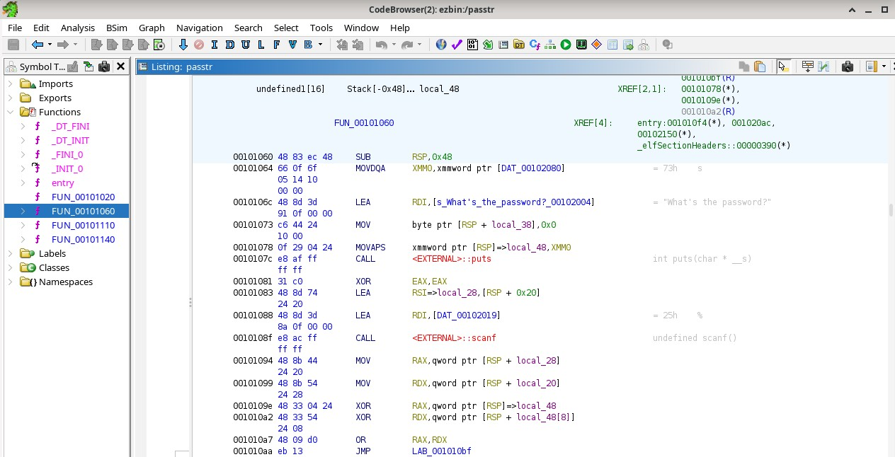

x
Ensimmäisenä videolla yritetään muutamaa eri keinoa saada salasana murrettua, mutta siinä ei onnistuta.
Seuraavaksi ghidra ladataan zip pakettina, vaikka sen olisi voinut ladata myös install komennolla Kaliin. Lataukseen tarvittiin myös java.
Tämän jälkeen videolla nimetään muuttujat etc. uudestaan jotta ne ovat luottavampia.
Koodista löytyy heksadesimaali, se käännetään pythonilla perusluvuksi ja syötetään ohjelmaan.
x.
Minulla meni melko pitkään saada ghidra toimimaan debianilla, mutta useiden java kokeilujen jälkeen sain sen toimimaan.
Luin packd-koodin ghidralla ja sain tämän tuloksen.

Seuraavaksi aloin kokeilla erilaisia keinoja käsitellä koodia.

Koodin selitys riveittäin:
int main(void) eli ohjelmiston pääfunktio josta sen sen toiminta alkaa. Ohjelmalla ei ole argumentteja (void) ja palauttaa int arvon.
int result; Luo muuttujan nimeltä result. Siihen tallennetaan strcmp() function tulema.
char local_28 [32]; Luo merkkilistan nimeltä local_28. Siinä on tilaa 32 merkille.
Siihen tallennetaan salasana jonka käyttäjä kirjoittaa.
puts("Whats the password); Kirjoittaa konsoliin "What's the password?". puts() kirjoittaa uuden rivin tekstin perään ja \ merkki ennen '-merkkiä tekee siitä c-kielelle sopivan.
scanf(&%s, local_28); scanf() lukee sen syötteen joka on annettu local_28. &%s ei ole oikein määritetty, mutta en saanut "&" merkkiä millään pois koodista, joten se jäi virheelliseksi.
result = strcmp(local_28, "piilosAnAnAs"); Vertailee käyttäjän syötettä stringiin piilosAnAnAs. Palauttaa 0 jos oikein, tallennetaan result muuttujaan.
if (result == 0) vertaa result muuttujan tulosta ja jos tulos 0, se ajaa koodin blokin sisällä.
Lopuksi ohjelma joko palauttaa myöntävän vastauksen ja lipun jos salasana oli oikein, jos ei niin tekstin "sorry, no bonus".
return 0; lopettaa ohjelman.
b
Pääsin tehtävässä tähän asti, mutten sen pidemmälle. Jäin jumiin tiedoston exporttaamisen kanssa.
Lähteet
Kurssin materiaali
Ghidra quickstart & tutorial: Solving a simple crackme https://www.youtube.com/watch?v=fTGTnrgjuGA&t=42s